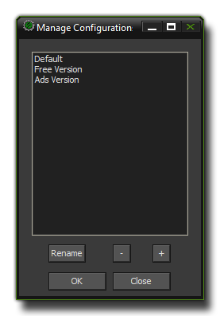
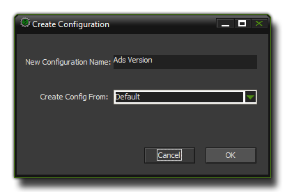

Due to the demands of cross platform development and the need for one product to be available and customised for different clients and/or devices, GameMaker:Studio
includes a configuration manager to make things simpler. Using this system, you can quickly switch between different splash screens, icons and included files and test or export only
those that are relevant to the target platform or client at any time, all from the same base code.
NOTE : This functionality is limited to the Professional Version of GameMaker:Studio.
To set up your configurations it is recommended that you first prepare a "default" config by incorporating all the configurable assets for the project into GameMaker:Studio, including
icons and splash screens (done through the Global Game Settings), included files and any
extensions that you may need. Please note that with the included files and extensions, you can select a target platform for them, and that should also be done at this point so that when you
create individual configurations it is simply a question of un-ticking those that you don't need.
Once you have set up the default configuration, at the top of the GUI you will see a button marked "Manage". If you click on this it will bring up the Configuration Manager window, as shown below :

Here is where you create new base configurations and give them a name (these configurations are project specific). You can remove configurations and rename them (note that the "default"
configuration cannot ever be removed or renamed) as well as create new ones by clicking on the "+" button. If you choose to make a new one, the following dialogue will be shown :
at the bottom which will bring up the following dialogue :

Here you are prompted to choose a new name for your new configuration and a previous config on which to base this (usually the default one, but in some special cases you may need to choose one
of your other configs). Clicking okay will return you to the manager where you can then create more custom configs or exit back to GameMaker:Studio.
Now that you have created your configurations you have to go ahead and customise them so that they actually do change the configurations! For that you should now review the
Global Game Settings for each target platform and add or remove icons, splash screens and any other information that is relevant to the configuration, as well as set up the
Texture Groups for each configuration. Then you should go through the included files and
extensions and tick (or un-tick) those that are needed too, and if you have set texture groups for each configuration you will also need to go through all the graphics
assets (sprites and backgrounds) and re-assign them. Every change you make to these settings will be remembered by the configuration manager and recalled whenever you change configurations.